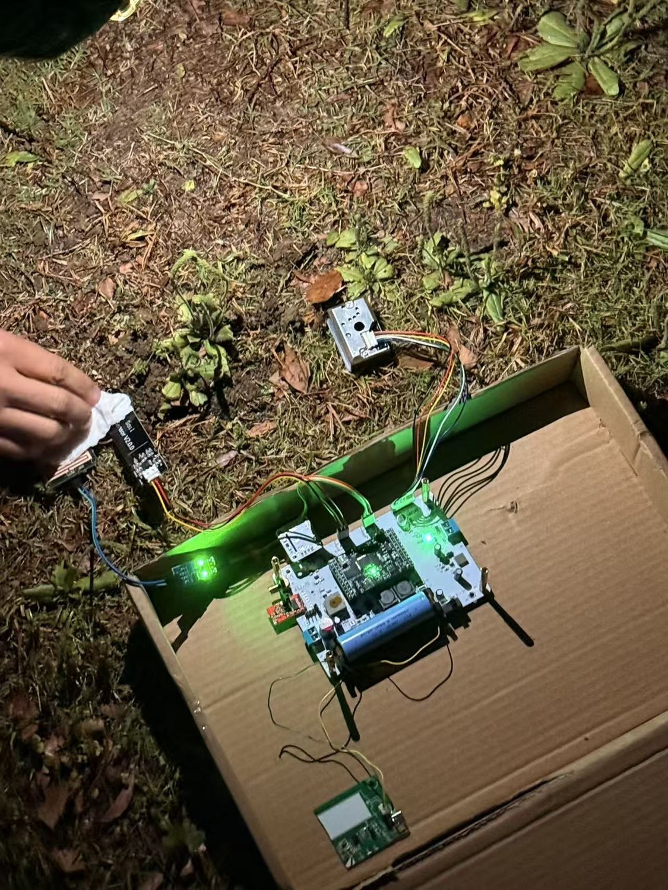

XJTLU · Mar–May 2026 · MEC202 Team Project · PCB and Firmware Developer
Soil and Environmental Monitoring with Automatic Irrigation
Contributed PCB and firmware development to a soil-monitoring and automatic-irrigation prototype with 433 MHz wireless telemetry.

My contributions
Three-board architecture
Adapted reference schematics into core, data-acquisition and receiver boards around Renesas MCUs. Routed sensor, RF and power interfaces and prepared PCB fabrication files.
Sensor and irrigation integration
Configured MCU pins and sensor-reading firmware. Corrected analogue-output and ADC mismatches in soil-moisture and rain sensing, integrating environmental measurements with irrigation logic.
Bring-up and debugging
Verified 3.3 V and 5 V rails and board connectivity, diagnosed USB serial-recognition problems, and supported firmware flashing, sensor integration and final prototype testing.